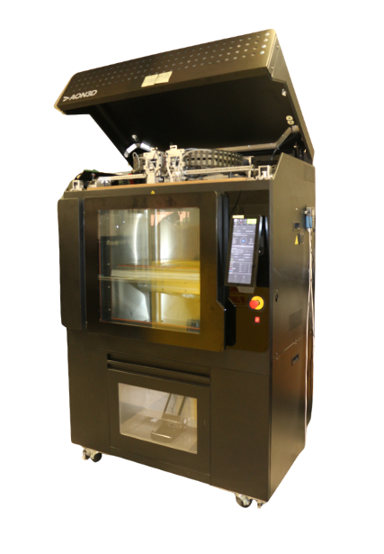

Microsystems and Advanced Materials Laboratory
AON3D Hylo (×2)
DescriptionClose
Enclosed filament printers for engineering thermoplastics including PEKK and PEI. Maximum nozzle temperature of 500 °C and active chamber heating up to 135 °C.